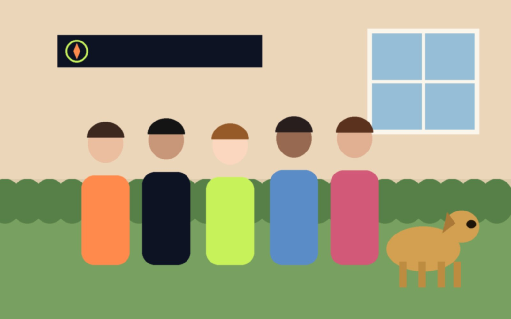

@studiobussola · 12 marzo
Oggi festa in giardino da Luca! Auguri a Rocky che compie 7 anni: nato nel 2019, il capo vero dell’agenzia. 🐶
38 mi piace
Otto persone, un ufficio in centro e tanta voglia di raccontare le storie delle aziende veronesi. A fare compagnia al team c’è Rocky, il labrador di Luca, che dal 2019 controlla personalmente ogni riunione.

Titolare e direttore creativo. Nato a Legnago, ha lavorato per anni in due agenzie milanesi prima di fondare lo studio nel 2014.
luca.ferrandi@studiobussola.example
Social media manager. Racconta le storie dei clienti con foto e video.
sara.conti@studiobussola.example
Sviluppatore web. Si occupa di siti, hosting e di tutto ciò che “non funziona”.
giulio.marchi@studiobussola.example
Grafica e illustratrice. Disegna i loghi e le etichette dello studio.
elena.pozzi@studiobussola.example